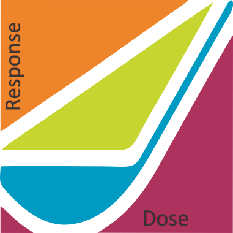

Low Dose Radiation Conference 2018 Short Biographies
Wade Allison
Ryoko Ando
Andrezej Strupczewski
Steve Baker
Tony Brooks
Bruno Comby
Bryan Leyland
Richard Bull
Allen T. Chan
Bruno Comby
Jerry M. Cuttler
Mohan Doss
Ludwig Feinendegen
Barrett N. (Barry) Fountos
Bennett S. Greenspan
Anthony M. Hooker
Cynthia G. Jones
Kelvin Kemm
Alexandre Klementiev
Shigeru Kumazawa
Mike Lawrence
Yevgeniya Le
Bryan Leyland
Guglielmo Lomonaco
Paul G. Lorenzini
Yuliya Lyamzina
Roger O. McClellan
Cynthia H. McCollough
Bruce Napier
Julian Preston
Nicholas D. Priest
Stephanie Puukila
Werner Rühm
John A. Shanahan
Roy E. Shore
Daniel O. Stram
Andrezej Strupczewski
Philip Thomas
Alan E. Waltar
Patricia Wieland
|
|
 |
|